主路线
从南街部署区向东打开拘押院，再护送居民沿南街、医舍主巷和横街抵达西门内圈接应口。
西街撤离、军需截运、沿海石堡、码头脱围、盐路护送、提炼院调查、山村地牢与盐原营地分别组织构图。街区、院落、道路和水域先形成真实关系，再安排部署与任务点；保留剧情、数值规则和现有动画。
前后地图均来自游戏原生渲染器；本轮收紧了地图尺寸，左右按各自完整边界展示，并非同像素比例的面积对比。点击原图可放大检查。
西门横街、医舍主巷和南街围成住区，东街拘押院设唯一南门；街边民宅与仓房各有朝向道路的门前空间。

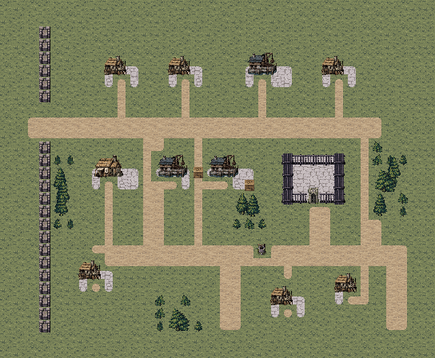
从南街部署区向东打开拘押院，再护送居民沿南街、医舍主巷和横街抵达西门内圈接应口。
仓房之间的一格侧街须移开路障，能够缩短南街与西门横街之间的联络距离。
可先清理撤离走廊再开院门，也可分兵接应；第4敌回合东南追兵仍会抵达，护卫应让开接应格。两名拘押居民必须存活撤离，街上第三名居民另行记录。
蓝：候选部署；红：守军；金：剧情友军；绿：交互；紫：出口。路线仅为本页解释，不加入实机画面；M32另以附加线标出运输车的实际北撤路线。实际通行以游戏地形为准。
结算时正式队员 5/6 存活；濒死：贝克。
1,113次按键，含出入场与战后操作。原始记录
结算时正式队员 5/6 存活；濒死：贝克。
1,449次按键，含出入场与战后操作。原始记录
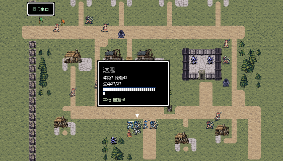
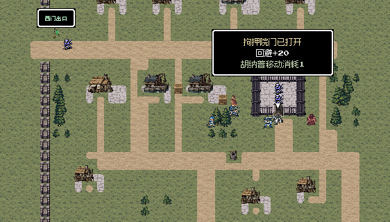
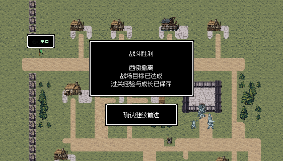
贯通南北的军需大道串起车场、北运输站与北口仓库；西运输站位于林带边的独立装卸坪。

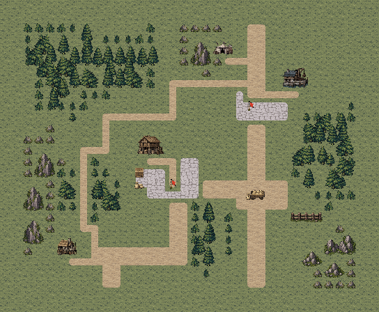
西南部署区先接西运输站，再向东截住运输车，沿两格大道推进到北运输站与护送长。
西坡一格林缘路绕过西站前方，通向北站侧面；大道东侧保留骑兵调动与装卸空间。
控制任一站或解开车锁即可停车，随后仍要确认两站和车锁并击败护送长；抢先截停与分兵向北各有取舍，运输车不能被当成可摧毁的敌目标。
蓝：候选部署；红：守军；金：剧情友军；绿：交互；紫：出口。路线仅为本页解释，不加入实机画面；M32另以附加线标出运输车的实际北撤路线。实际通行以游戏地形为准。
结算时正式队员 6/6 存活；无人濒死。
714次按键，含出入场与战后操作。原始记录
结算时正式队员 6/6 存活；无人濒死。
772次按键，含出入场与战后操作。原始记录
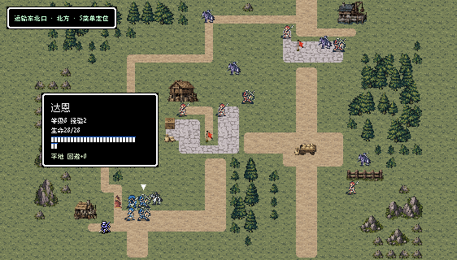
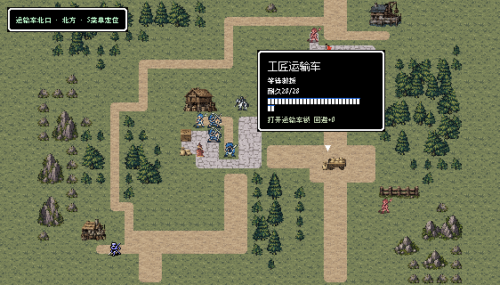
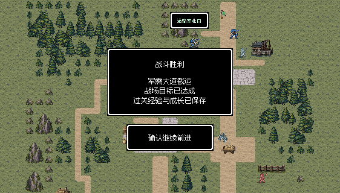
连续北墙、西墙、东墙、南墙与海蚀崖围住旧石内庭，北端主楼、南侧外院和东侧工房码头形成明确内外分区。

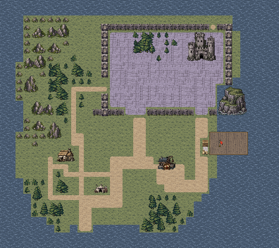
两格堡前主道穿过南墙三格正门进入内庭；东南两格港门连接工房卸货路和伸入海面的投送栈桥。
一格西崖林缘路经西侧门进入内庭，堡后联络路接东北内圈出口；医舍东侧小路避开屋体接回外院。
攻堡与控制码头可分工进行；取记录必须走到工房南门，格曼存活时还须在堡主败北后邻接交涉，不能用清场取代投降处理。
蓝：候选部署；红：守军；金：剧情友军；绿：交互；紫：出口。路线仅为本页解释，不加入实机画面；M32另以附加线标出运输车的实际北撤路线。实际通行以游戏地形为准。
结算时正式队员 6/6 存活；无人濒死。
1,038次按键，含出入场与战后操作。原始记录
结算时正式队员 6/6 存活；无人濒死。
943次按键，含出入场与战后操作。原始记录
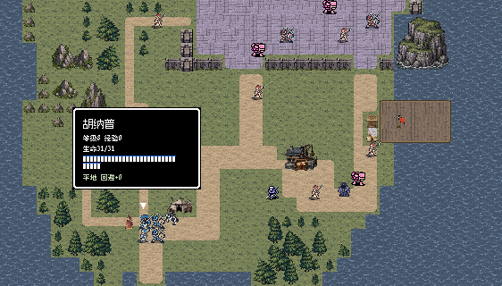
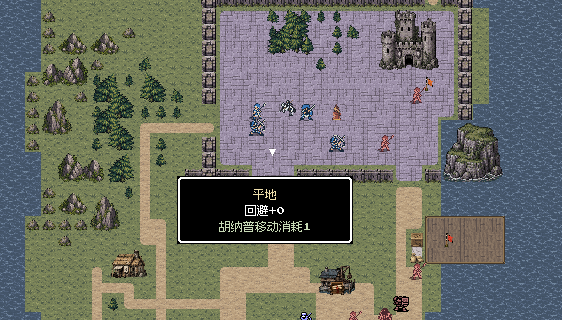
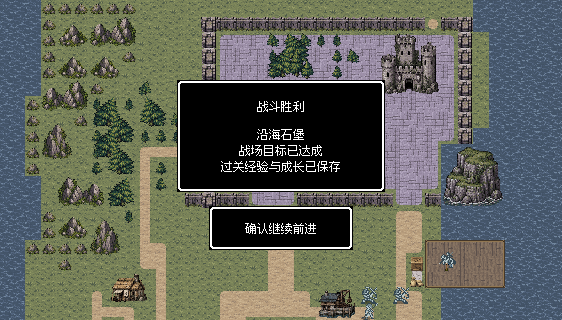
西侧海湾、错落码头和仓街形成港口工作区，西南己船接应伤者；南北拘留院各自围合，门前广场接仓街。

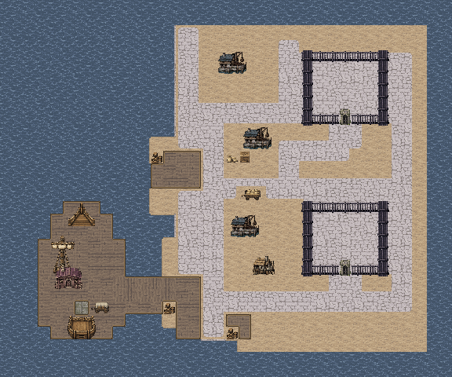
护卫从西南跳板岸侧展开，沿仓街清理门前威胁，分别打开南北两处封锁，让伤者沿街回到己船。
东侧巡逻街连接两院后方，仓库间短街用于换线；靠海木码头与内街分开呈现，装卸货物避开转运路。
分路救援能更快打开两院，但还要控制回撤街区与第3敌回合增援；两门均须解锁，全部存活伤者都要回船，不能仅接走其中一组便结束。
蓝：候选部署；红：守军；金：剧情友军；绿：交互；紫：出口。路线仅为本页解释，不加入实机画面；M32另以附加线标出运输车的实际北撤路线。实际通行以游戏地形为准。
结算时正式队员 5/5 存活；无人濒死。
1,069次按键，含出入场与战后操作。原始记录
结算时正式队员 5/5 存活；无人濒死。
1,058次按键，含出入场与战后操作。原始记录
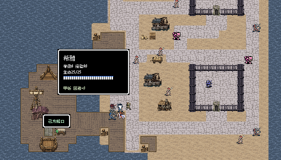
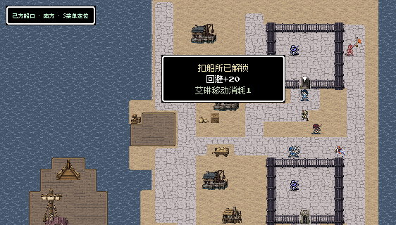
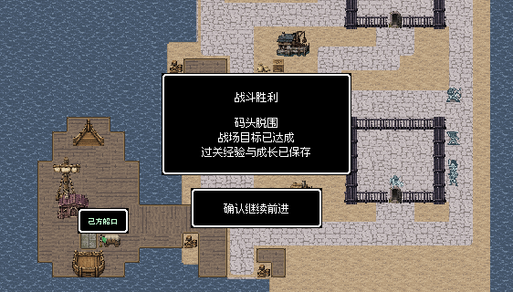
盐池和低岩脊围出西侧干道，中央旧井成为路标；东侧盐盘开阔，北端关口控制离开方向。
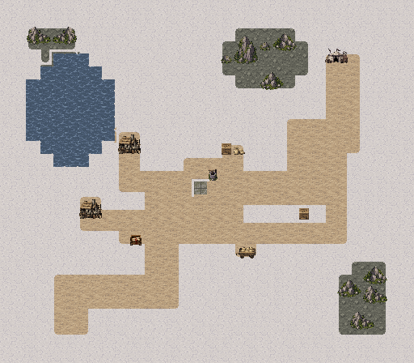

向导从护卫后方出发，经南侧住屋、中央井院和盐池西岸干道抵达北关出口。
旧井北侧的丘脊小路可绕行，东盐盘另有较直的暴露支路和可移开的路障；固定弓手与术士压住东侧接近线。
护卫可沿干道逐步清威胁，或冒险从开阔侧路接近守军；向导近敌等待，护卫不能只顾追首领。向导死亡时，南住屋旁路线册仍支持原替代分支。
蓝：候选部署；红：守军；金：剧情友军；绿：交互；紫：出口。路线仅为本页解释，不加入实机画面；M32另以附加线标出运输车的实际北撤路线。实际通行以游戏地形为准。
结算时正式队员 5/5 存活；无人濒死。
1,114次按键，含出入场与战后操作。原始记录
结算时正式队员 5/5 存活；无人濒死。
1,125次按键，含出入场与战后操作。原始记录
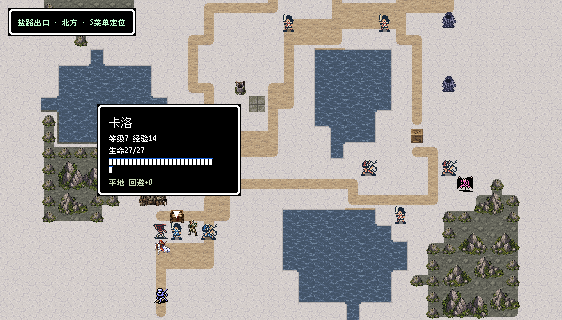
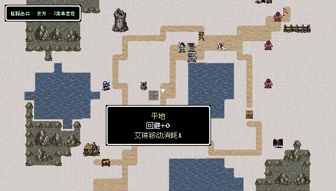
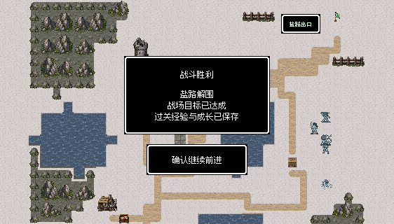
南侧工房、西北档案屋、北控制楼和中央调节水院形成围合设施；石廊、裸盐地、种植槽与水面区分用途。


从南后门先控制工房前庭，再沿主廊接近档案屋和北控制楼；工房唯一南门与部署区直接相接。
中央石岛由东西两座维修桥接岸，外围环廊连接两侧守军与阵台；可沿外环换线后再进入水院。
两名维持设施的术士必须存活，打开工房后仍需保护后方；复制记录和稳定阵台是分别执行的操作，击败控制神官不能代替两项调查。
蓝：候选部署；红：守军；金：剧情友军；绿：交互；紫：出口。路线仅为本页解释，不加入实机画面；M32另以附加线标出运输车的实际北撤路线。实际通行以游戏地形为准。
结算时正式队员 6/6 存活；无人濒死。
1,352次按键，含出入场与战后操作。原始记录
结算时正式队员 6/6 存活；无人濒死。
777次按键，含出入场与战后操作。原始记录
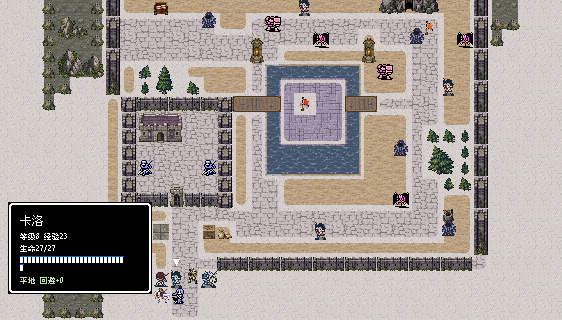
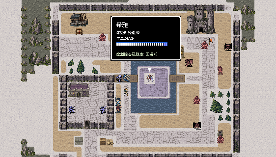
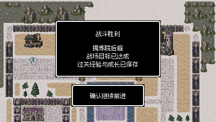
住屋、井台、医舍和粮仓组成山村，北侧山肩分置两座拘押院，狱卒哨楼面向两院间勤务道。

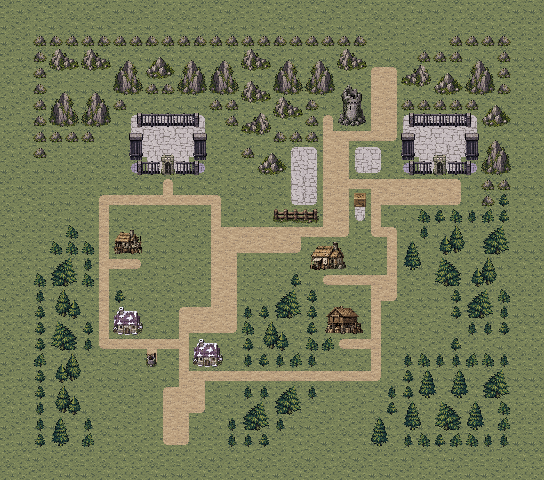
南村口进入主街，经过井台和山肩勤务道抵达东院；西侧住户巷可先接西院南门。
粮仓后巷绕向东山肩，连接守军侧面；两院之间有横路，便于开门前重新分配护卫。
两扇门都须打开，至少一组家属存活并击败首领；家属不要求撤到出口。蕾娜劝降旧部是可选手段，缺席时仍有战斗路线。
蓝：候选部署；红：守军；金：剧情友军；绿：交互；紫：出口。路线仅为本页解释，不加入实机画面；M32另以附加线标出运输车的实际北撤路线。实际通行以游戏地形为准。
西术士营房、东居民营房和北指挥帐分区明确，井台、粮仓与木障构成营地生活和勤务空间。

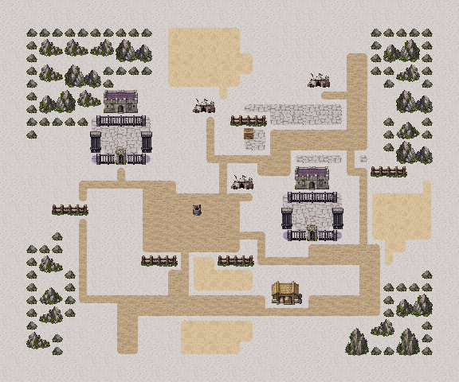
从南营口经井台推进中央驻军，分别打开两间营房，再接近北侧营长前庭。
东西外侧巡查路通向两扇南门，东后勤路继续连到指挥院侧面，两条救援线可以重新汇合。
可先清门前守军再开营房，也可分兵救援；两门和营长是任务条件，诺娅、弟弟与居民的生死分别记录，战后问责与接纳不被地图改写。
蓝：候选部署；红：守军；金：剧情友军；绿：交互；紫：出口。路线仅为本页解释，不加入实机画面；M32另以附加线标出运输车的实际北撤路线。实际通行以游戏地形为准。
结算时正式队员 5/5 存活；无人濒死。
766次按键，含出入场与战后操作。原始记录
结算时正式队员 5/5 存活；无人濒死。
604次按键，含出入场与战后操作。原始记录
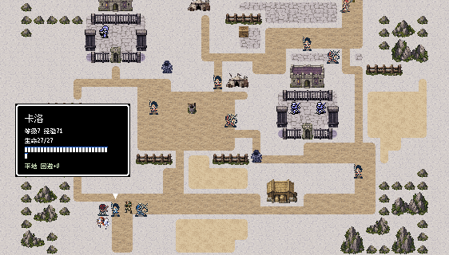
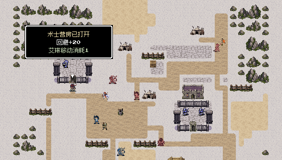
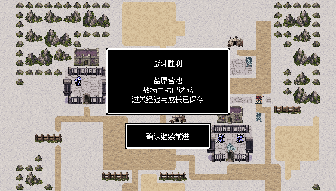
八图完成两轮逐关实际输入复测，检查战后据点、救援、招募和主线接续。另从第二章真实完成记录接续，保留成长、伤情与招募，通过第三章全部八图、D33会谈并进入第四章。船医在码头战濒死后，盐路一度因艾琳前压而败北；从原败北记录经游戏正常重试一次，调整前后排行动顺序后完成余下六图。没有改写属性、随机结果或胜负条件。
M31撤离点从不可进入的最外圈移至西门内(2,7)，两轮均确认拘押居民完成撤离；F33最后两备用部署内缩，十格都合法；M33增加真实堡墙与南正门、港侧门和侧攻入口；拘押院栏杆接缝补齐，住屋门前小径和道路衔接收紧。 M33围墙补强后另将北侧引导点移至(26,2)通路，实走确认不再被堡楼隔断。
3172项独立规则、连通与保存检查通过；24张实机视口文字安全区检查无错误。前两章与M41在内的其余32张地图保持原样，程序与人物动画代码沿用。
两轮逐关检查使用真实开发记录的隔离副本；测试程序通过普通按键驱动实际游戏，完成移动、战斗、交互和结算，没有修改属性、随机结果或强制胜利。表内回合数受路线、命中和伤情影响，不代表固定难度。
首轮M31因出口落在最外圈等待到第91回合，失败记录保留，修正后重新完整通关。M32旧战中测试记录因运输车坐标校验不匹配而拒绝载入，改从同次未修改的战前世界记录正常进入新图，没有为旧图新建兼容版本。最后的M33堡墙和F33备用部署修订后，这两图重新完成两轮，全章亦重新从上一章通关记录连续验证。自动按键策略会产生自然伤情，逐轮列出存活和濒死人数；两轮逐关不等于两次新档全流程。 最终整章弱阵容样本在F31船医濒死后，F32因艾琳前压而败北；从原败北存档通过结果菜单重试一次，改为洛德先行、罗恩支援、艾琳后行，完成后续六图及第四章入口。原败北与重试记录均公开保留。
未重新安装手机包；HTML资源与脚本检查不等同浏览器布局验收。